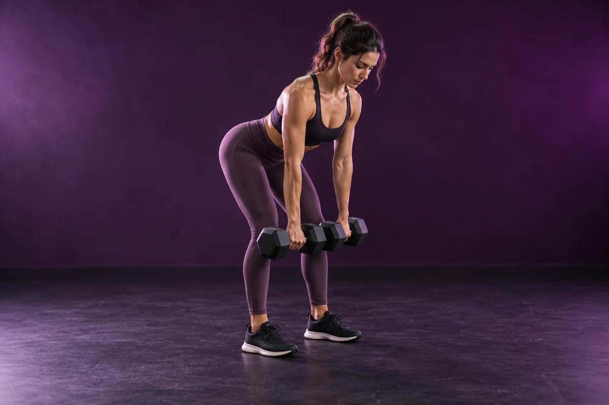

Forza · il tuo ritmo
Sala pesi
Lun · Mar · Mer · Gio · Ven 07:00–22:00Sab 09:00–18:00Dom 10:00–13:00
Allenamento con i pesi per lavorare su forza, controllo e progressione personale. Un’attività da organizzare in base ai tuoi obiettivi, con i tuoi tempi.
Come si svolge
In sala puoi dedicarti a esercizi con sovraccarichi e costruire una routine graduale. Il personale qualificato è presente durante tutto l’orario di apertura dal lunedì al sabato. La domenica la sala è aperta dalle 10:00 alle 13:00, senza la copertura continuativa del personale di sala.